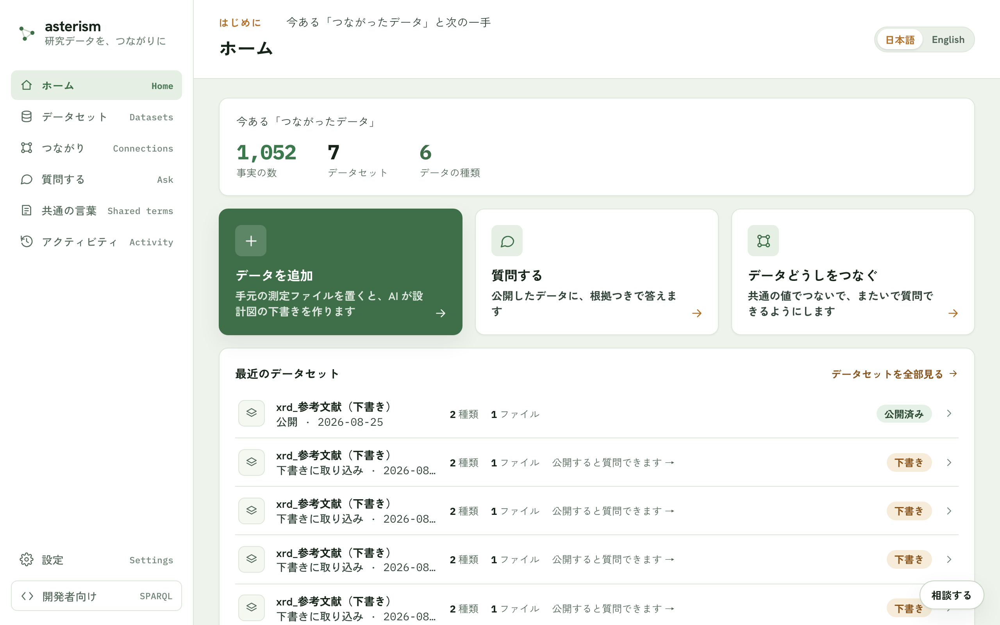

Asterism ユーザーマニュアル
Asterism は、研究データを「つながったデータ」にする道具です。Excel・CSV・装置のファイルを置くと AI が設計図の下書きを作り、あなたが確かめて公開します。公開したデータには、ふつうの言葉で質問でき、答えには出どころが付きます。公開するまで、データは誰にも見えません。

はじめに
| 章 | 内容 |
|---|---|
| はじめる | かんたんモードの 6 ステップ。まずここから |
データを育てる
| 章 | 内容 |
|---|---|
| データの追加 | 対応しているファイル・読み取りの確認・文書の取り込み |
| データセットの管理 | 公開・新しい測定分の追記・差し替え・設計の見直し |
| つながり | 別々のデータを共通の値でつなぎ、またいで質問できるようにする |
つかう
しくみを知る
| 章 | 内容 |
|---|---|
| つながったデータの基礎 | RDF・IRI・クラス・属性・オントロジー・SPARQL の関係 |
| データセットの中のファイル | 変換ルール・仕様・検索タグ・設計書が何をしているか |
そばに置く
困ったときは
- 操作の場所がわからない: 画面別の導線リファレンス
- 画面を離れず聞きたい: 右下の「AI に相談」ボタン（相談チャット）